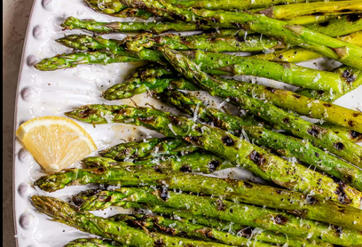

Grilled Asparagus

Descr+iption
Searching for the best summer side dish that comes together in minutes? Look no further than this easy grilled
asparagus that’s tossed in olive oil, seasoned with salt and pepper, and grilled until perfectly tender.
Steps
- Toss the asparagus with olive olive
- Season
- Grill until lightly charred
Ingredients
- Asparagus: Start with a pound of fresh, clean, trimmed asparagus.
- Oil:Olive oil keeps the asparagus keeps the asparagus from drying out and gives the seasonings
something to stick to.
- Seasonings: The grilled asparagus is simply seasoned with salt and pepper